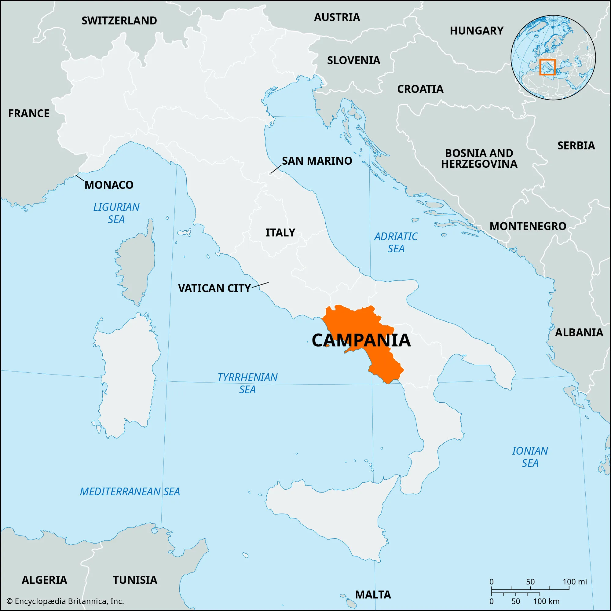
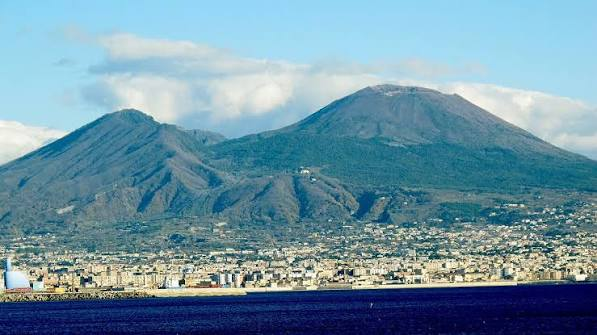
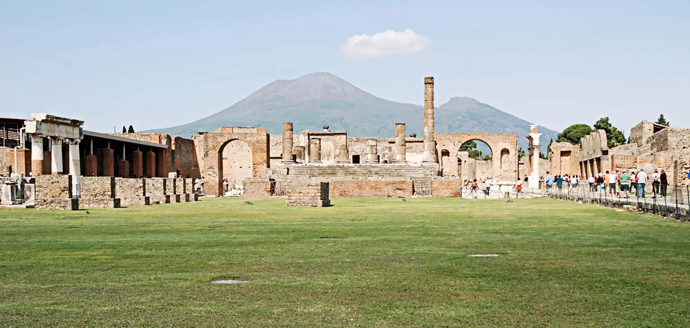
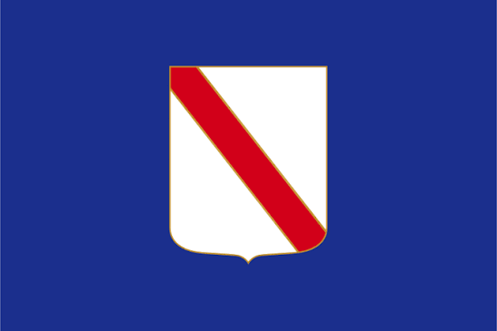
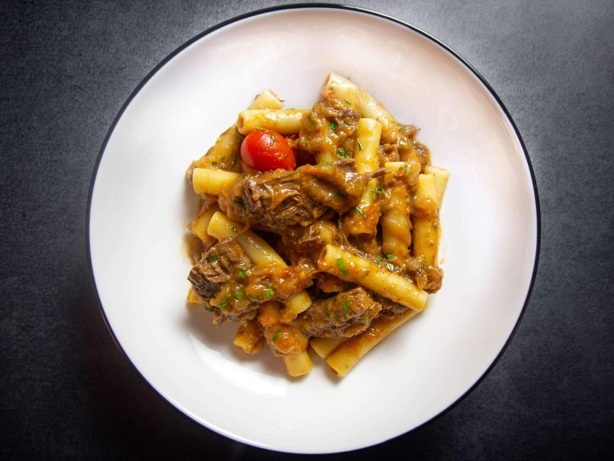
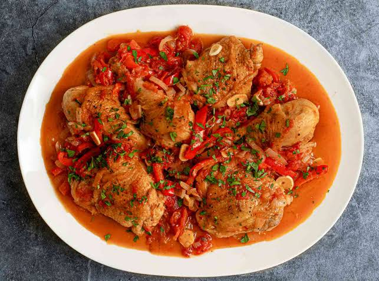
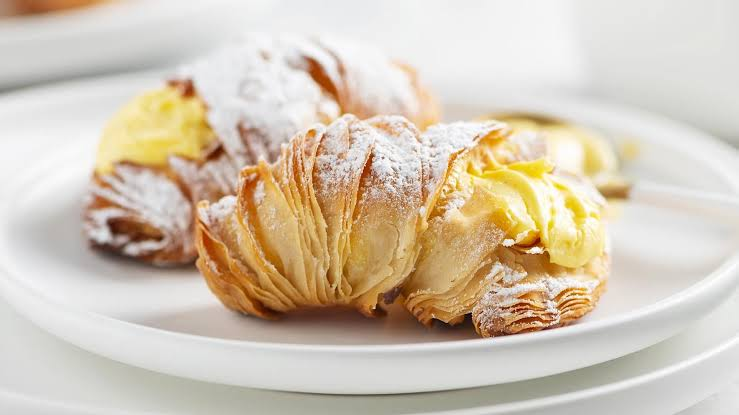
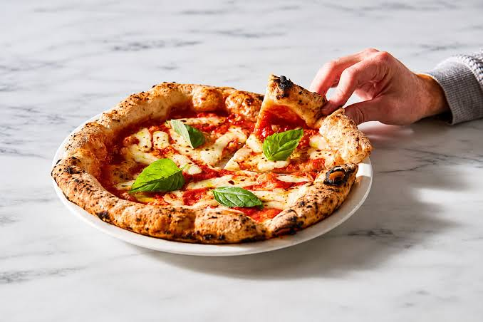
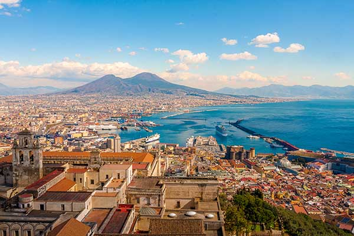

Southwestern Italy along the Tyrrhenian Sea
Naples (Napoli)
Volcanoes, mountains, coastline, and fertile plains
Italian and Neapolitan
Pizza, Pollo alla cacciatora, and Pasta dishes
Naples, Pompeii, Amalfi Coast, and Mount Vesuvius

Campania is a region in Southern Italy known for its rich history, vibrant culture, and stunning coastline along the Tyrrhenian Sea. Its capital, Naples, is one of Italy’s oldest and most important cities, famous for its historic centre, lively streets, and culinary traditions. The region is also home to world-renowned sites such as Pompeii, Mount Vesuvius, and the Amalfi Coast. Campania combines ancient heritage with natural beauty, making it one of the most visited regions in Italy.
It is comprised of 5 provinces: Avellino, Benevento, Caserta, Napoli, and Salerno.
Capital (and largest city): Napoli (Naples)
The climate is typically Mediterranean along the coast with warm, sunny and sultry summers and mild, rainy winters, whereas in the inner zones it is more continental, with lower temperatures in winter and warm summers. Snow is possible at higher elevations but rare at sea level. 51% of the total area is hilly, 34% mountainous and the remaining 15% is made up of plains. There is a high seismic risk across the region. Here you’ll also find the volcanic regions around the Bay of Naples—the Campi Flegrei and Mount Vesuvius
Pre-Roman Period: Before Roman expansion, Campania was inhabited by several Oscan-speaking Italic tribes such as the Osci, Aurunci, Ausones, and Samnites, along with other groups including the Campanians and Lucanians. These communities mainly lived in small agricultural settlements. Between the 9th and 6th centuries BC, the Etruscans also established colonies in inland Campania, founding and influencing several important early cities. At the same time, Greek colonists from Euboea founded coastal settlements such as Cumae, Ischia, and Paestum, making the region an important part of Magna Graecia.
Samnite and Roman Expansion: During the 4th century BC, the Samnites expanded into Campania, taking control of key cities such as Capua and Cumae. This led to conflict with the Roman Republic, known as the Samnite Wars. Rome gradually gained control of the region, especially after alliances with cities like Neapolis. By the end of the wars, most of southern Campania was under Roman control.
Roman Period: By the late 4th century BC, Campania became fully integrated into the Roman Republic and later the Roman Empire. The region was valued for its fertile land, agriculture, and strategic ports such as Misenum, which served as an important Roman naval base. Naples remained a centre of Greek culture, helping create early Greco-Roman traditions. Campania was also a popular retreat for Roman emperors, and Christianity spread there during this period. In 79 AD, the eruption of Mount Vesuvius destroyed Pompeii and Herculaneum.
Late Roman decline: As the Roman Empire declined, Campania experienced instability and political change. In 476 AD, the last Western Roman emperor was imprisoned near Naples, marking the end of imperial rule in the region. This event signalled the beginning of a long period of uncertainty and transition.
Early Middle Ages: During the Early Middle Ages, Campania was divided among various duchies and principalities controlled by the Byzantines and Lombards. The Normans later unified these smaller states into the Kingdom of Sicily. This period also saw cultural influences from the Arabs, Byzantines, and other Mediterranean powers, shaping the region’s development.
Norman to Angevin period: Under Norman rule, Campania became part of the Kingdom of Sicily and later passed to the Hohenstaufen dynasty. Emperor Frederick II founded the University of Naples, turning the city into a major intellectual centre. In 1266, the Angevins took control and moved the capital to Naples, which became a growing political and cultural hub.
Aragonese to Bourbon period: After internal conflicts and the Sicilian Vespers, the kingdom split, though Naples remained highly important. The region later came under Aragonese and then Spanish rule, becoming part of the Spanish Empire. Naples grew into one of Europe’s largest cities and became a centre of art, philosophy, and Baroque culture. In 1738, the Bourbon dynasty established control, and Naples later became part of the Kingdom of the Two Sicilies.
Modern era / 20th century: In the 19th century, Campania became part of a rapidly modernising Kingdom of the Two Sicilies, with early railways and industrial development appearing in Naples. During World War II, the region played a key role, especially Salerno, which served as a temporary capital of Italy in 1944 after the Allied landings. During the 20th century, the region experienced significant social and economic changes. Today, Campania is universally famous for its natural beauty, traditional cuisine and archaeological sites such as Pompeii and Herculaneum.
As of 2026, the total population of Campania is 5.5 million people.
In addition, the region covers an area of 13,676 km² and a population density of 407.2/km².
Naples is the capital city of the Campania region and one of the oldest continuously inhabited cities in the world. It is known for its rich history, vibrant street life, and stunning location along the Bay of Naples with Mount Vesuvius in the background. The city is famous for its historic centre, a UNESCO World Heritage Site, as well as its cultural contributions to music, art, and cuisine, especially being the birthplace of pizza. Today, Naples remains a major cultural and economic hub in southern Italy.
Population: 905,050 people
Salerno is a coastal city known for its scenic location along the Tyrrhenian Sea and its important historical role during World War II, when it briefly served as the capital of Italy in 1944. Today, it is famous for its medieval old town, the Salerno Cathedral, and its lively waterfront. It is also a gateway to the Amalfi Coast.
Population: 125,323 people
Giugliano in Campania is one of the largest municipalities in Italy by population and is located northwest of Naples. It is known for its urban development, agricultural areas, and proximity to the Phlegraean Fields, a volcanic region with ancient archaeological sites. The town reflects a mix of modern life and historical roots.
Population: 125,018 people
Torre del Greco is a coastal town located at the foot of Mount Vesuvius, famous worldwide for its tradition of coral craftsmanship and cameo carving. It has a long history linked to the sea, including fishing and maritime trade. Despite being affected by volcanic eruptions in the past, it remains an important cultural and artisanal centre in Campania.
Population: 78,839 people

Mount Vesuvius is one of the world's most famous active volcanoes and overlooks the Bay of Naples. It is best known for its catastrophic eruption in 79 AD, which buried the ancient cities of Pompeii and Herculaneum under volcanic ash. Today, it is a popular destination where visitors can hike to the crater and enjoy panoramic views of the surrounding area.

Pompeii is one of the world's most remarkable archaeological sites and a UNESCO World Heritage Site. Buried by the eruption of Mount Vesuvius in 79 AD, the city was preserved beneath layers of ash, providing an extraordinary glimpse into daily life in ancient Rome. Visitors can explore its streets, houses, temples, theatres, and frescoes that have survived for nearly 2,000 years.
Want to learn about the history of Pompeii? Click here!

The flag of Campania consists of the region's coat of arms centered on a blue field. The coat of arms is inspired by the historic Maritime Republic of Amalfi, one of Italy's powerful medieval naval republics. It consists of a simple white shield crossed by a bold red diagonal band, symbolizing the region's rich maritime heritage and historical importance.
The flag of Campania has not been officially adopted by regional law. However, the region uses a de facto unofficial flag consisting of the region's coat of arms (a white shield with a red diagonal stripe) centered on a light blue background.
Blue Field: Represents the sea, sky, and coastal landscapes of southern Italy, reflecting Campania’s deep, historic connection to the Tyrrhenian Sea.
White Background: The central coat of arms features a white field that symbolizes peace and purity.
The Red Diagonal Band: The red stripe running from top to bottom represents military strength, courage, and a nod to the region's noble, ancient Roman lineage.
Amalfi Hertiage (Coat of Arms): This exact coat of arms (a red band on a white field) was adopted by the Duchy of Amalfi, one of the four legendary Maritime Republics of Italy. It symbolizes the region's medieval seafaring power, commercial dominance, and autonomy.
The primary language spoken in the Campania region is Italian, serving as the official language for administration, education, and formal communication. Alongside Italian, the vast majority of locals speak Neapolitan, a distinct Romance language with deep historical roots and its own unique vocabulary and pronunciation.
Neapolitan: Spoken by millions across Southern Italy. It is not mutually intelligible with Standard Italian, though most Campanians are bilingual. It features a unique "schwa" sound (∂) and has absorbed strong linguistic influences from Spanish, French, and Greek.
Italian: Used in formal education, government, and media. Most locals are perfectly bilingual but speak Italian with a highly recognizable Campanian accent.
Historical Context: Before the rise of the Roman Empire, the region's early inhabitants spoke Oscan, an Italic language. The coastal areas also featured heavy Greek and Etruscan settlements, which permanently left traces in the vocabulary and phonetics of modern Neapolitan.
Campania’s cuisine is one of the most famous in Italy and is known for its simple ingredients and rich flavours. It is based on fresh local produce such as tomatoes, olive oil, vegetables, seafood, and wheat, which are used to create both everyday dishes and traditional specialties.

Pasta alla Genovese is a traditional Neapolitan dish made with slow-cooked onions and beef, creating a rich, sweet, and savoury sauce. Despite its name, it is not from Genoa but is a specialty of Naples. The onions are cooked for hours until they form a thick, creamy sauce that is usually served with ziti or paccheri pasta, making it a comforting and deeply flavourful dish.

Pollo alla Cacciatora (hunter-style chicken) is a classic Campanian dish made with chicken slowly cooked in tomatoes, garlic, onions, herbs, and sometimes wine. It is a rustic recipe that reflects traditional countryside cooking, where simple ingredients are used to create rich and hearty flavours. The dish is often served with bread or potatoes to soak up the sauce.

Sfogliatella is one of Campania’s most famous pastries, originating from the region’s convent traditions. It is known for its distinctive layered, shell-like pastry filled with ricotta cheese, semolina, sugar, and citrus flavouring. There are two main types: riccia (crispy and layered) and frolla (softer and smoother), both widely enjoyed in Naples and beyond.

Pizza is the most famous dish from Campania, especially from Naples, where it developed into its modern form between the 18th and 19th centuries. Traditional Neapolitan pizza is made with simple, high-quality ingredients such as tomato, mozzarella, basil, olive oil, and a soft, hand-stretched dough baked at very high temperatures. One of the most iconic versions is Pizza Margherita, created in honour of Queen Margherita of Savoy and representing the colours of the Italian flag. Today, Neapolitan pizza is recognized worldwide and is protected by UNESCO as part of Italy’s cultural heritage.
Campania has a rich artistic heritage that spans from ancient Greek and Roman times to the modern era. The region is home to some of Italy’s most important archaeological and artistic sites, including the preserved frescoes and mosaics of Pompeii and Herculaneum, which offer a unique glimpse into everyday Roman life. During the Renaissance and Baroque periods, Naples became a major cultural centre, attracting artists such as Caravaggio, who created some of his most famous works there. Today, Campania continues to be known for its vibrant visual arts scene, historic architecture, and strong tradition of craftsmanship.

Naples is one of Italy’s most important cultural and artistic centres, with a rich artistic heritage shaped by centuries of Greek, Roman, and European influence. The city is known for its historic architecture, including grand churches, ornate palaces, and a UNESCO-listed historic centre filled with narrow streets, frescoes, and baroque details. Naples has also played a major role in the development of Italian art, music, and theatre, especially during the Renaissance and Baroque periods. Today, it continues to inspire artists and visitors with its vibrant street art, museums, and strong cultural identity.
Pino Daniele was one of the most influential singer-songwriters from Naples and a key figure in Italian music. Born in 1955, he blended traditional Neapolitan music with blues, jazz, and rock, creating a unique and recognizable style. One of his most famous songs is "Napule è" (Naples is), a heartfelt tribute to his hometown that captures both the beauty and struggles of Naples. His music gave a modern voice to Neapolitan identity and continues to be widely celebrated across Italy even after his death in 2015.
Want to learn more about Campania? Watch this video to explore its landscapes, history, culture, and traditions.
Watch the video →Want to learn more about Naples? Watch this video.
Watch the video →